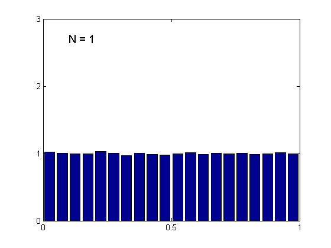
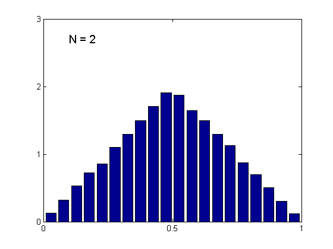
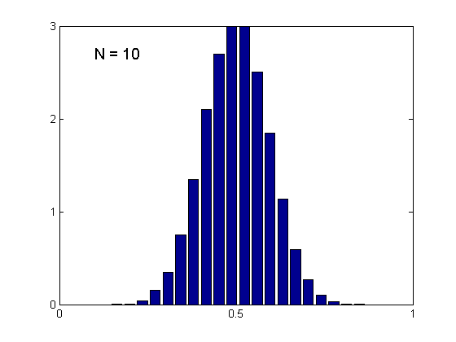

Demonstration of the Central Limit Theorem, based on Bishop 2.6
function centralLimitDemo
samples = 100000;
bins = 20;
N = [1 2 10];
for i=1:length(N)
figure(i);
convolutionHist(N(i),samples,bins);
printPmtkFigure(sprintf('clt%d.pdf', N(i)));
end
  
function convolutionHist(N,sampleSize,bins)
X = mean(rand(sampleSize,N),2);
[counts binLocations] = hist(X,bins);
counts = counts / (sampleSize/bins);
bar(binLocations,counts);
axis([0 1 0 3])
set(gca,'XTick',[0 0.5 1]);
set(gca,'YTick',0:3);
text(0.1,2.7,['N = ',num2str(N)],'FontSize',14);
end
end